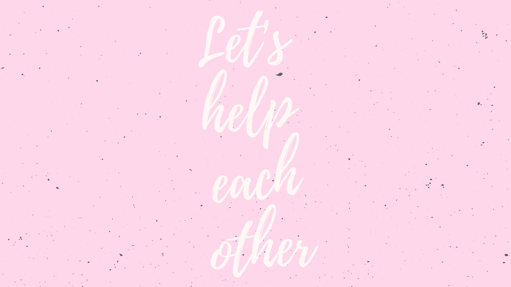

|  |
Welcome
Understanding Anxiety Disorders

Many of us worry from time to time. We fret over finances, feel anxious about job interviews, or get nervous about social gatherings. These feelings can be normal or even helpful. They may give us a boost of energy or help us focus. But for people with anxiety disorders, they can be overwhelming.
The Power of Pets

Nothing compares to the joy of coming home to a loyal companion. The unconditional love of a pet can do more than keep you company. Pets may also decrease stress, improve heart health, and even help children with their emotional and social skills.
Building Social Bonds

Strong, healthy relationships are important throughout your life. Your social ties with family members, friends, neighbors, coworkers, and others impact your mental, emotional, and even physical well-being.
Tick Tock: Your Body Clocks

Did you know that your body has its own internal network of clocks? These biological clocks help you feel alert during the day, hungry at mealtimes, and sleepy at night. Keeping your body’s daily cycles, or circadian rhythms, in sync is important for your health.
Deepika Padukone quote

People talk about physical fitness, but mental health is equally important. I see people suffering, and their families feel a sense of shame about it, which doesn't help. One needs support and understanding. I am now working on an initiative to create awareness about anxiety and depression and help people.